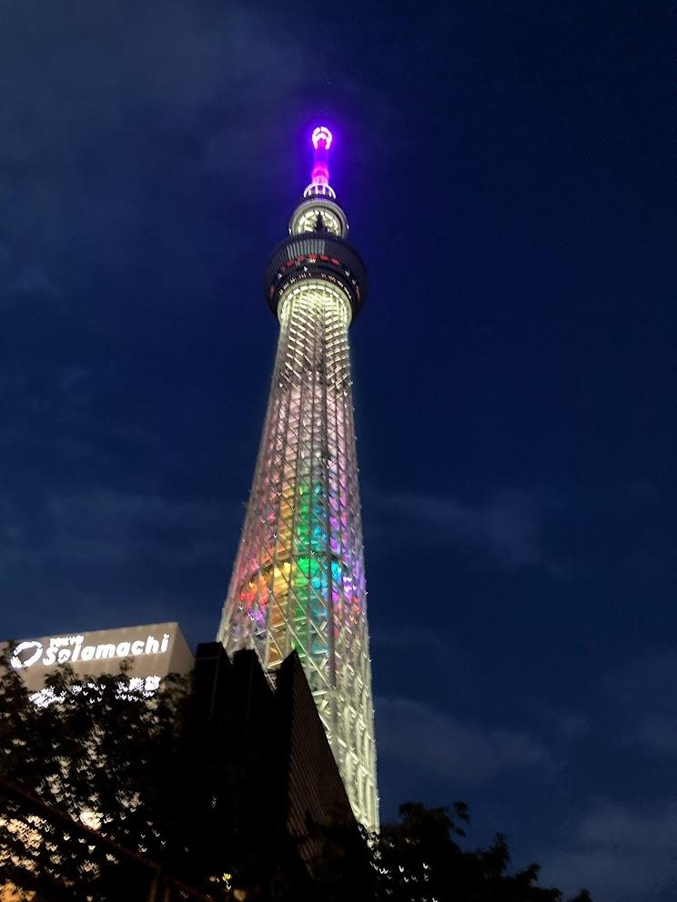

スカイツリー周辺
～隅田川沿い～
--/-- 2021
カテゴリー：通常散歩
 東京都台東区・墨田区
東京都台東区・墨田区
今回はとっても有名な観光スポットの一つ『東京スカイツリー』を散歩してきました。僕の都合もあり、遅めの開催になってしまいました。おかげで綺麗な夜景を見ることができたので紹介したいと思います。

僕たちが歩いていた時にちょうど特急リバティが通過していました。東武鉄道の新型特急車両でWi-Fiが使用できる、コンセントがあるという素敵な社内環境が備わっているそうです。私もつい先日乗ってみましたがとても快適でした。

東京スカイツリーのお膝元を流れる北十間川の川辺の遊歩道です。夜はライトアップされるのでとてもおススメのスポットです。
夜景を楽しむ散歩も今後実施できれば行っていきたいですね。ではまた。
← 次の記事 前の記事 →